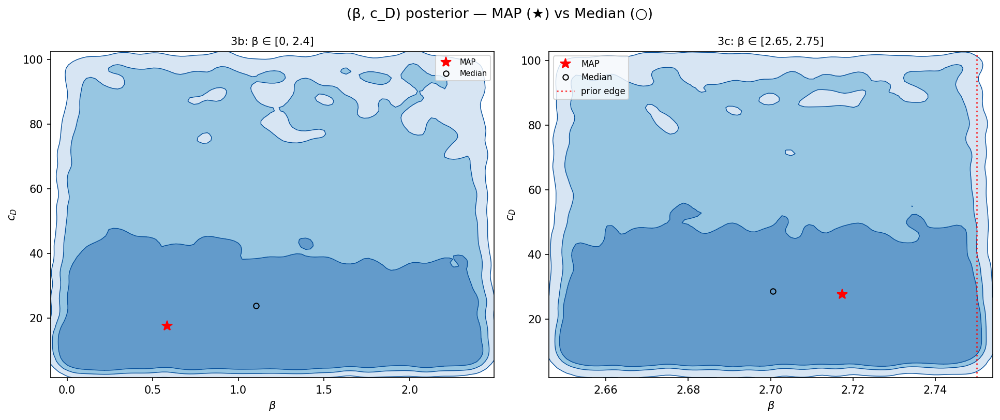
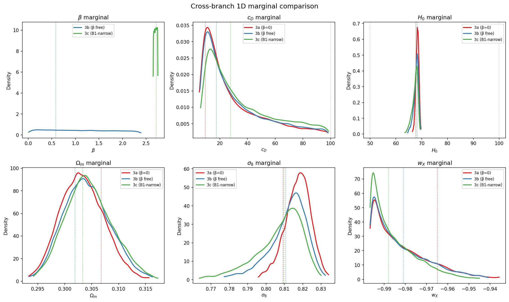
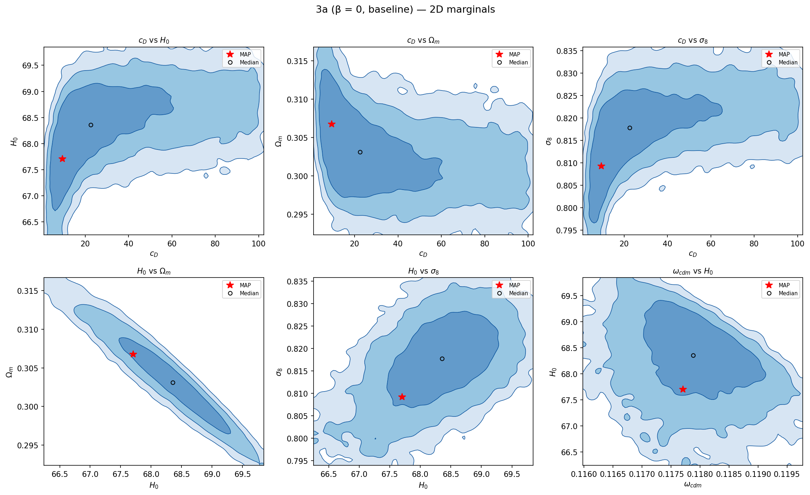
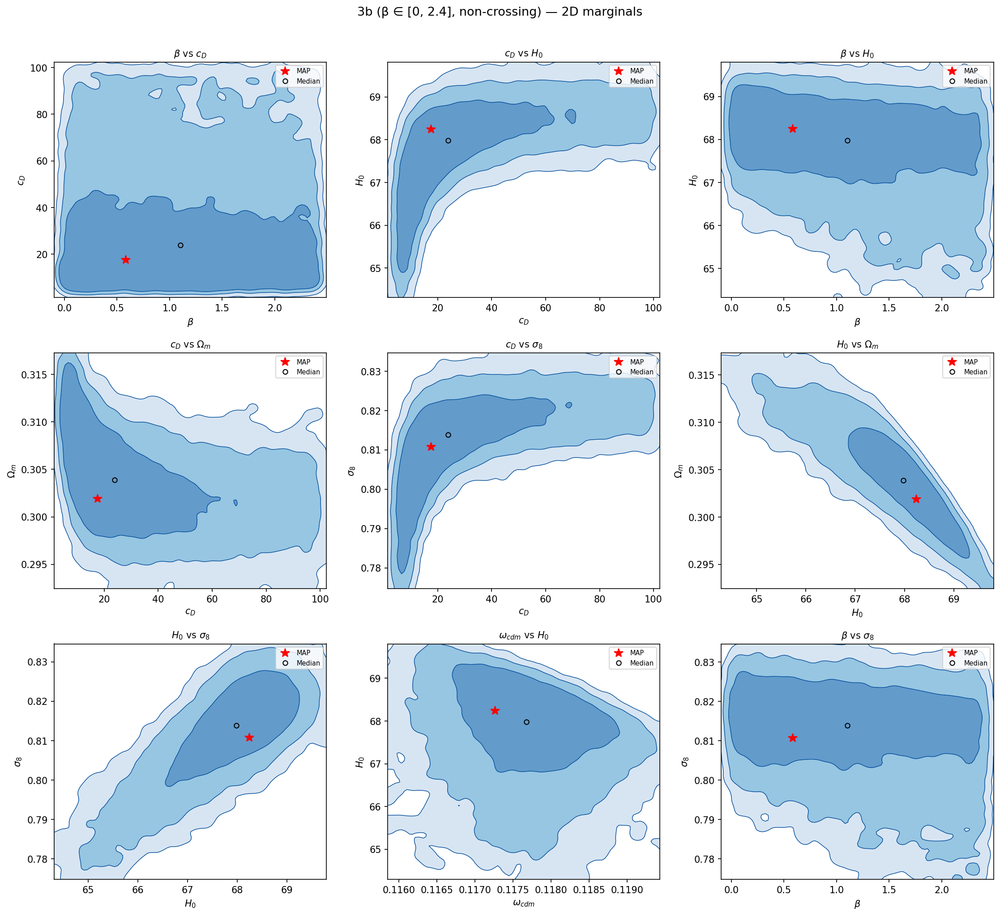
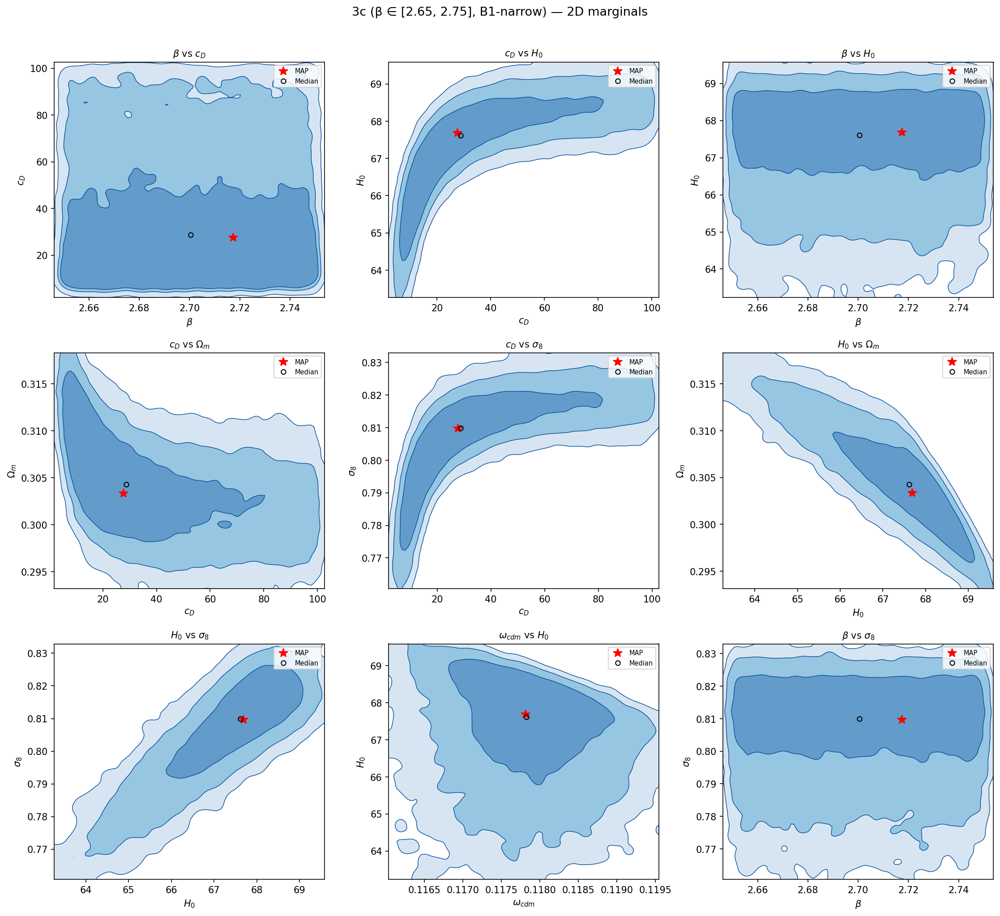

Three pre-registered branches of the Martin–Koh Yang-Mills afterglow framework against current data. This page is the abstract; see the explorer for interactive 2D KDEs and the YM-anchor page for the equations behind the branch boundaries.
mcmc/gen_chains_summary_mock.py). Replace chains_summary.json with output from the real-chain export script once available.
No bimodality anywhere. Every 2D KDE is a single ridge. See the geometry-lesson page for why this matters and what the §3.11 indirect-signal trap looks like.
| Branch | β prior | Theory rationale | What we see |
|---|---|---|---|
| 3a baseline | β = 0 |
Arrested-medium hypothesis. Isolated YM tail, no DE↔matter coupling. | Clean Gaussian posterior; reference for the others. |
| 3b non-crossing | β ∈ (0, 2.4] |
Coupled, but below the structural crossing threshold β·Ψ_max > 1. | β marginal is flat; non-β params look like 3a with mild shifts. |
| 3c crossing (B1-narrow) | β ∈ [2.65, 2.75] |
Inside the structurally-allowed crossing window 3√3/2 < β < 2√3. | β marginal mirrors the narrow prior; non-β params consistent with 3a/3b. |

Horizontal slabs in both panels. Vertical extent (c_D) is data-driven. Horizontal extent (β) is the prior — if you slice horizontally at any c_D the likelihood is roughly constant across β. That visual is the signature of a flat likelihood in β.

Six panels, three curves per panel (red = 3a, blue = 3b, green = 3c). Curves that overlay → result is robust across branches. Curves that spread → result depends on the β branch assumption. Only β shows large branch-dependence (because each branch has a different β prior); c_D, H₀, w_χ overlay cleanly; Ωₘ and σ₈ shift mildly within ~1σ.



These three numbers are the gating items for paper finalization. The β CI is a direct read off the 3b chain; log Z requires MCEvidence or a nested-sampling rerun; Δ log Z requires a fresh ΛCDM chain under the same likelihood stack.
Next: Explore the posteriors interactively → · YM theory anchor → · The §3.11 geometry lesson →